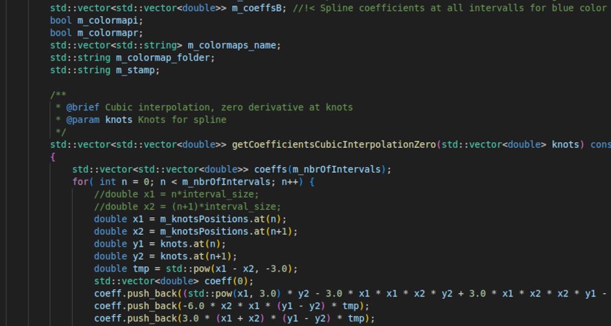
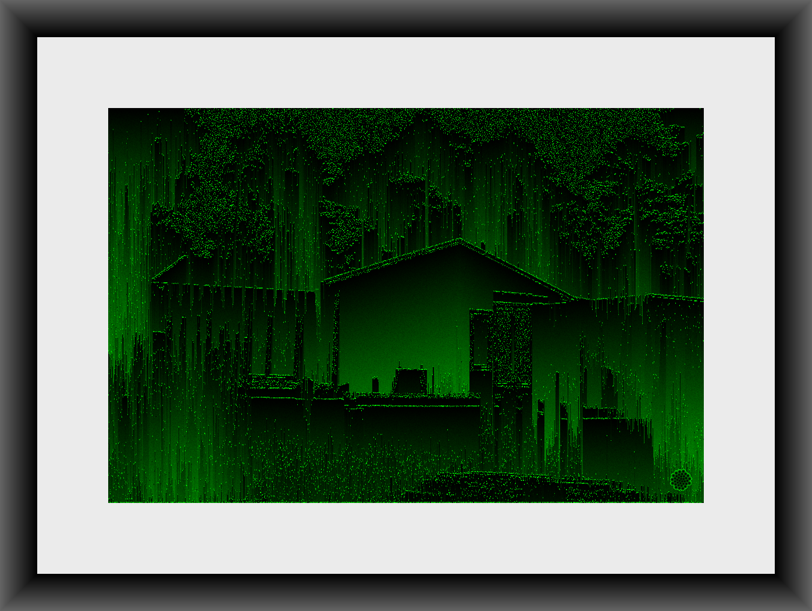

Sv
Sv
 En
En
Min process
Jag skapar bilder genom att skriva kod som sedan körs och genererar bilder. Mitt mål är att göra så mycket som möjligt själv från grunden. Detta dels för att jag vill lära mig nya saker i processen men även för att ha kontroll på och veta vad som händer i datorn. Därför har jag från grunden skapat program i programmeringsspråket C++.

Idén jag ursprungligen hade var att skapa verk baserade på matematiska funktioner vilka utgår ifrån slumpade byggstenar. Exempelvis baseras flera bilder på slumpvis genererade punkter och varje pixel i bilden får sedan ett värde baserat på exempelvis avstånd till en punkt eller flera. I sista ledet färgläggs bilden baserat på varje pixels värde och en färgskala, se nedan.
Ett annat exempel på vad jag gör är att förändra bilder på olika sätt, se bilden nedan. Detta gör jag med hjälp av egna fotografier.

Varje tryck skapas i min egen studio med fokus på högsta arkivbeständighet och visuell precision. Bilderna skrivs ut på en professionell pigmentbläckskrivare (Epson SureColor SC-P900) med pigmenterade bläck som ger museumskvalitet och en livslängd utformad för att bevara färgerna över generationer. Jag trycker främst på Fine Art Cotton Textured Natural II, ett 100 % syrafritt bomullspapper med en mjuk, taktil struktur. Papperets naturliga ton och levande yta ger bilderna ett unikt djup och en känsla som påminner om klassiska måleritekniker.